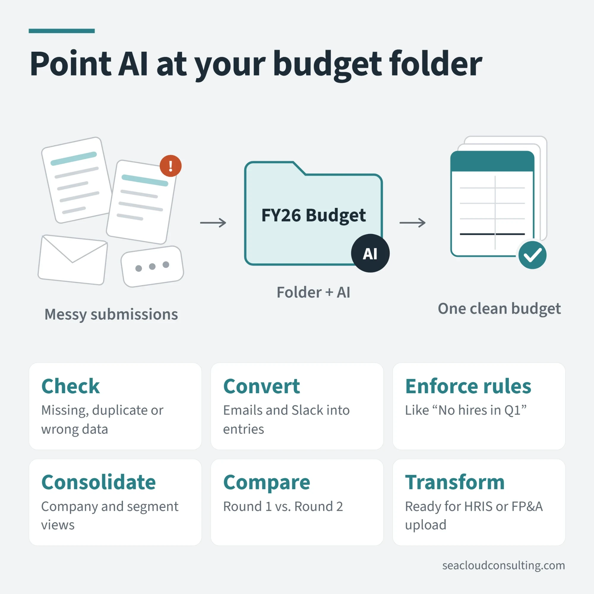

Point AI at your budget folder

Want to use more AI in your budget process this year? Connect a folder and let AI work with files.
Anthropic launched Cowork in January 2026, and ChatGPT has similar capabilities, so this is something new you can try this year. See my post from last week for a deeper explanation.
This capability is helpful with at least two tasks: creating and consolidating templates.
This is most applicable for earlier-stage companies without a dedicated planning tool, or really any company that’s still mostly in Excel. Also, my examples apply to collecting expense data but could be used for any process that needs input from stakeholders.
🛠️ CREATING TEMPLATES
Typically, the finance team creates templates that show historical headcount and vendor-level detail and then asks cost center owners to project into the future.
Before AI, this would involve consolidating information from several sources and manually creating a forecast and file for each person, which could be semi-automated with Excel plug-ins or formulas.
With AI, you can dump all the relevant data into folders and then create a template for a single department (either with AI or by hand). Then, you can have AI replicate all the department files by pointing it at your budget folder (or by having AI code a macro).
🧹 CONSOLIDATING TEMPLATES
Once you send out the templates, you often get back a mess. Some people don’t use the template, use it incorrectly or just generally make mistakes.
Over the last week, I have been experimenting with budget templates using AI pointed at a folder. Specifically, you can ask AI to:
- Check files for missing, duplicated or incorrect data
- Convert data from an email or Slack exchange into entries in a template
- Flag the templates for compliance (for example, if you said “No hires in Q1”)
- Consolidate data into corporate and segment views
- Compare versions, if you go through multiple rounds
- Transform finalized data for upload into an HRIS or FP&A forecasting tool
In my tests, I was impressed with how flexible and accurate AI was with all these tasks. Once you've set it up, you can save the steps as a workflow and reuse them in the next budget cycle.
More on AI and finance
 3 ways to use AI in ExcelBudgeting season is coming up for a lot of companies. Here is a simple framework for the three main ways you can use AI with Excel.
3 ways to use AI in ExcelBudgeting season is coming up for a lot of companies. Here is a simple framework for the three main ways you can use AI with Excel. Don’t toss AI slop grenadesI heard this term on a podcast recently, and the meaning is clear if you have ever received half-baked AI output at work.
Don’t toss AI slop grenadesI heard this term on a podcast recently, and the meaning is clear if you have ever received half-baked AI output at work. An AI Adoption Framework for FP&A TeamsA reference guide on where AI works in FP&A today, how adoption usually progresses, and the use cases I have actually implemented. Created with AI,…
An AI Adoption Framework for FP&A TeamsA reference guide on where AI works in FP&A today, how adoption usually progresses, and the use cases I have actually implemented. Created with AI,…